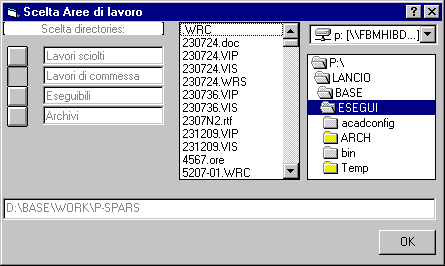
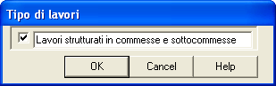

Spazio per l'archiviazione dei risultati delle diverse elaborazioni del sistema Lancio senza strutturazione in sottocommesse. Può essere definita dall'utente senza limitazioni (disco locale o di rete). Per impostazione predefinita è la sottodirectory DATI della directory di istallazione (C:\Programmi\Lancio).
Spazio per l'archiviazione dei risultati delle diverse elaborazioni del sistema Lancio con strutturazione in sottocommesse. Può essere definita dall'utente senza limitazioni (disco locale o di rete). Per impostazione predefinita è la sottodirectory WORK della directory di istallazione.
L'organizzazione dei dati nel caso di lavori di commessa è spiegata in dettaglio in un capitolo apposito.
Spazio dove risiedono alcuni moduli eseguibili, che, nel caso di Funzionamento in Rete, è uno spazio predefinito sul server. E' sconsigliabile cambiare le impostazioni predefinite; se si vuole ottenere un funzionanamento locale invece che un funzionamento in rete, bisogna rieseguire il programma di istallazione.

Se si seleziona l'opzione 'lavori strutturati', il lavoro sarà archiviato nella directory definita nelle opzioni 'Aree di lavoro' come 'Lavori di commessa'. La directory avrà tante sottodirectory quante sono le sottocommesse. Si potrà accedere alle informazioni tecniche e gestionali generate anche da altre applicazioni del sistema 'Lancio'. Le commesse saranno identificate da quattro cifre e le sottocommesse da sei cifre.
Se non si seleziona l'opzione, il lavoro sarà archiviato nella directory definita nelle opzioni 'Aree di lavoro' come 'Lavori sciolti'.
Alcuni programmi del sistema Lancio sono stati sviluppati sotto MS-DOS in QuickBasic, ed hanno bisogno del run-time module BRT71EFR.EXE.
Di tale run-time esistono diverse versioni; la versione utilizzata da Lancio deve essere quella compatibile con la versione del linker utilizzata per compilare gli eseguibili.
La versione corretta di BRT71EFR.EXE viene installata automaticamente durante l'installazione di Lancio nella directory Programmi\Lancio\Bin, e non in una directory di sistema, al fine di non interferire con eventuali diverse installazioni di QuickBasic nel computer dell'utente.
E' allora necessario inserire la suddetta directory privata nei cammini di ricerca della shell DOS che verrà aperta da Lancio.
Tale operazione è eseguita in modo specifico a seconda che il computer ospite giri sotto W96/98, W-NT o W2000/Millennium Edition.